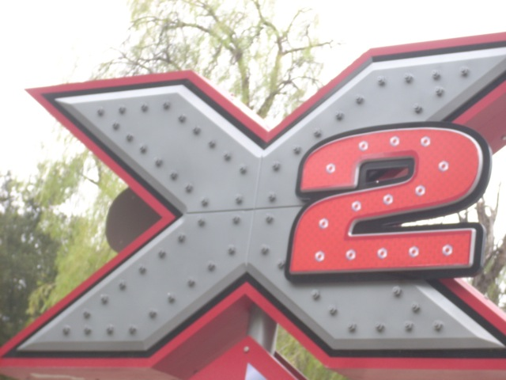
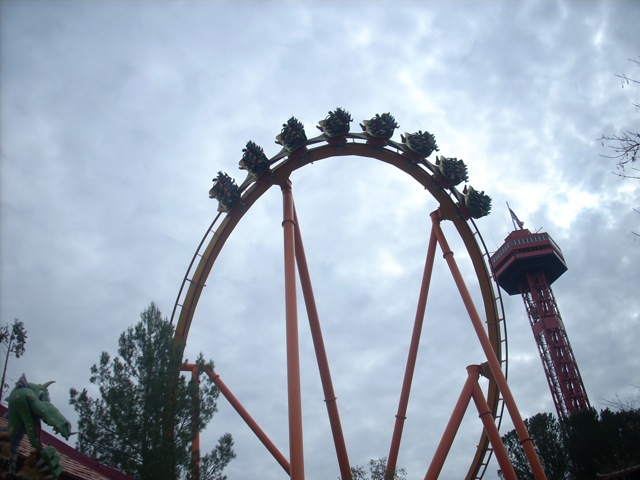
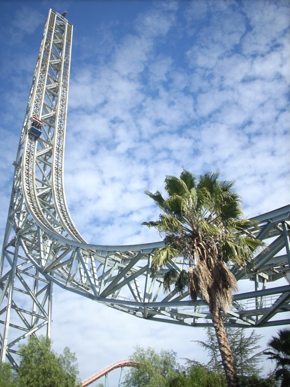
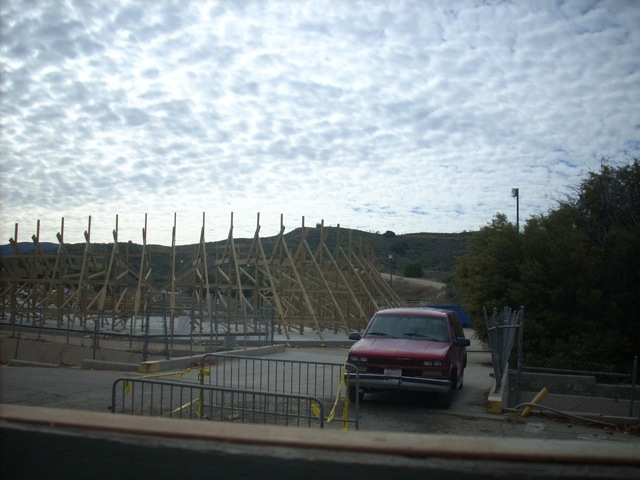
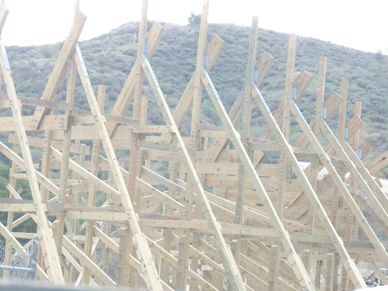
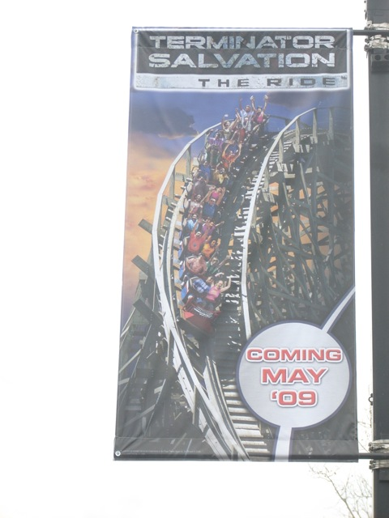
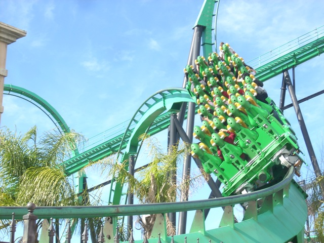

First 2009 Update
Ok. So I know I've been terrible about update's recently. But after this update, it will all be smooth sailing and frequent updates just the way it was before the Big PC Crash. Anyways to start out 2009, we went to Six Flags Magic Mountain and before we even got there, another Infamous Incrediblecoasters Moment of Stupidity has offically been repeated.
It appears that today, Cody has forgot his f**king season pass. Wow. It really is impossible to escape the Stupidity of Incrediblecoasters.
I'm not going to go into detail with this to save you a good 2 hours of your day, but what I will tell you is that this conversation was FUNNY!!!

Anyways, There's no better begenning to a coaster season than riding X2! (Unless you start on Maverick.)
 No matter how many times you ride X2, that first drop is sick, insane, and awsome!!
No matter how many times you ride X2, that first drop is sick, insane, and awsome!!
 The fire is not nearly as intense in the winter.
The fire is not nearly as intense in the winter.

Sorry Tatsu, but your line is too long, our time is limited, and there are no more free fastpasses. So we can't ride you today.
However, we will ride a coaster if it has a statue of a robot wearing red panties in it's line.

Though you can't tell in the picture, Superman was going quite high today.
Jet Stream is alot more fun in January.
"Hi, I'm Cody. As you can clearly see, I am riding Jet Stream alone because I have no friends. If you dare come speak to me,you can find me in the SFMM Parking Lot filming the rides."

Ok, so Six Flags Magic Mtn has decided to get a new coaster for 2009 and we at Incrediblecoasters are going to make sure that we check on the progress they are doing.

As you can clearly see, they have started Vertical Construction and are now begenning to work on one of the turns.

As well as working on the turn, Six Flags has also began to advertise Terminator.
 Thanks to Riddlers Single Riders Line, we never have to wait for this fun ride ever again.
Thanks to Riddlers Single Riders Line, we never have to wait for this fun ride ever again.

Riddlers was running much better today than it was running on New Years Eve. (Yes, I was here on New Years Eve.)
It's January 2009, So why haven't I seen this game in any stores?
Dang! What's up with this Goliath Support saying Dang!?
I have learned a very important lesson in Fast Food today. NEVER put ketchup in the french fries container!!! It WILL leak and it WILL get on your legs and shoes!!!! (As you can see.)
While I was getting X2 footage and pictures, I found a new friend. His name is Danny. Danny is a lizard who is unfortunetly, afraid of fire and ran away when he saw X2's fire effect. Please come back Danny. I deeply miss you.
And what better way to end the update than seeing Cody wear a stupid hat.
Home